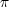

The “basic entity of drawing” in PGF is the path. A path consists of several parts, each of which is either a closed or open curve. An open curve has a starting point and an end point and, in between, consists of several segments, each of which is either a straight line or a Bézier curve. Here is an example of a path (in red) consisting of two parts, one open, one closed:
|
A path, by itself, has no “effect,” that is, it does not leave any marks on the page. It is just a set of points on the plane. However, you can use a path in different ways. The most natural actions are stroking (also known as drawing) and filling. Stroking can be imagined as picking up a pen of a certain diameter and “moving it along the path.” Filling means that everything “inside” the path is filled with a uniform color. Naturally, the open parts of a path must first be closed before a path can be filled.
In PGF, there are numerous commands for constructing paths, all of which start with \pgfpath. There are also commands for using paths, though most operations can be performed by calling \pgfusepath with an appropriate parameter.
As a side-effect, the path construction commands keep track of two bounding boxes. One is the bounding box for the current path, the other is a bounding box for all paths in the current picture. See Section 21.13 for more details.
Each path construction command extends the current path in some way. The “current path” is a global entity that persists across TEX groups. Thus, between calls to the path construction commands you can perform arbitrary computations and even open and closed TEX groups. The current path only gets “flushed” when the \pgfusepath command is called (or when the soft-path subsystem is used directly, see Section 34).
The most basic operation is the move-to operation. It must be given at the beginning of paths, though some path construction command (like \pgfpathrectangle) generate move-tos implicitly. A move-to operation can also be used to start a new part of a path.
This command expects a PGF-coordinate like \pgfpointorigin as its parameter. When the current path is empty, this operation will start the path at the given <coordinate>. If a path has already been partly constructed, this command will end the current part of the path and start a new one.
|
|
The command will apply the current coordinate transformation matrix to <coordinate> before using it.
The command will update the bounding box of the current path and picture, if necessary.
This command extends the current path in a straight line to the given <coordinate>. If this command is given at the beginning of path without any other path construction command given before (in particular without a move-to operation), the TEX file may compile without an error message, but a viewer application may display an error message when trying to render the picture.
|
The command will apply the current coordinate transformation matrix to <coordinate> before using it.
The command will update the bounding box of the current path and picture, if necessary.
This command extends the current path with a Bézier curve from the last point of the path to <coordinate>. The <support 1> and <support 2> are the first and second support point of the Bézier curve. For more information on Bézier curve, please consult a standard textbook on computer graphics.
Like the line-to command, this command may not be the first path construction command in a path.
|
The command will apply the current coordinate transformation matrix to <coordinate> before using it.
The command will update the bounding box of the current path and picture, if necessary. However, the bounding box is simply made large enough such that it encompasses all of the support points and the <coordinate>. This will guarantee that the curve is completely inside the bounding box, but the bounding box will typically be quite a bit too large. It is not clear (to me) how this can be avoided without resorting to “some serious math” in order to calculate a precise bounding box.
This command closes the current part of the path by appending a straight line to the start point of the current part. Note that there is a difference between closing a path and using the line-to operation to add a straight line to the start of the current path. The difference is demonstrated by the upper corners of the triangles in the following example:
|
The path construction commands that we have discussed up to now are sufficient to create all paths that can be created “at all.” However, it is useful to have special commands to create certain shapes, like circles, that arise often in practice.
In the following, the commands for adding (parts of) (transformed) circles to a path are described.
This command appends a part of a circle (or an ellipse) to the current path. Imaging the curve between <start angle> and <end angle> on a circle of radius <radius> (if <start angle> < <end angle>, the curve goes around the circle counterclockwise, otherwise clockwise). This curve is now moved such that the point where the curve starts is the previous last point of the path. Note that this command will not start a new part of the path, which is important for example for filling purposes.
|
Saying \pgfpatharc{0}{360}{1cm} “nearly” gives you a full circle. The “nearly” refers to the fact that the circle will not be closed. You can close it using \pgfpathclose.
The <radius> need not always be a single TEX dimension. Instead, it can also contain a slash, in which case it must consist of two dimensions separated by this slash. In this case the first dimension is the x-radius and the second the y-radius of the ellipse from which the curve is taken:
|
The axes of the circle or ellipse from which the arc is “taken” always point up and right. However, the current coordinate transformation matrix will have an effect on the arc. This can be used to, say, rotate an arc:
|
The command will update the bounding box of the current path and picture, if necessary. Unless rotation or shearing transformations are applied, the bounding box will be tight.
The effect of this command is to append an ellipse to the current path (if the path is not empty, a new part is started). The ellipse’s center will be <center> and <first axis> and <second axis> are the axis vectors. The same effect as this command can also be achieved using an appropriate sequence of move-to, arc, and close operations, but this command is easier and faster.
|
The command will apply coordinate transformations to all coordinates of the ellipse. However, the coordinate transformations are applied only after the ellipse is “finished conceptually.” Thus, a transformation of 1cm to the right will simply shift the ellipse one centimeter to the right; it will not add 1cm to the x-coordinates of the two axis vectors.
The command will update the bounding box of the current path and picture, if necessary.
A shorthand for \pgfpathellipse applied to <center> and the two axis vectors (<radius>,0) and (0,<radius>).
Another shape that arises frequently is the rectangle. Two commands can be used to add a rectangle to the current path. Both commands will start a new part of the path.
Adds a rectangle to the path whose one corner is <corner> and whose opposite corner is given by <corner> + <diagonal vector>.
|
The command will apply coordinate transformations and update the bounding boxes tightly.
Adds a rectangle to the path whose two opposing corners are <corner> and <opposite corner>.
|
The command will apply coordinate transformations and update the bounding boxes tightly.
Appends a grid to the current path. That is, a (possibly large) number of parts are added to the path, each part consisting of a single horizontal or vertical straight line segment.
Conceptually, the origin is part of the grid and the grid is clipped to the rectangle specified by the <lower left> and the <upper right> corner. However, no clipping occurs (this command just adds parts to the current path). Rather, the points where the lines enter and leave the “clipping area” are computed and used to add simple lines to the current path.
Allowed <options> are:
|
The command will apply coordinate transformations and update the bounding boxes tightly. As for ellipses, the transformations are applied to the “conceptually finished” grid.
|
This command appends two half-parabolas to the current path. The first starts at the current point and ends at the current point plus <bend vector>. At his point, it has its bend. The second half parabola starts at that bend point and end at point that is given by the bend plus <end vector>.
If you set <end vector> to the null vector, you append only a half parabola that goes from the current point to the bend; by setting <bend vector> to the null vector, you append only a half parabola that goes to current point plus <end vector> and has its bend at the current point.
It is not possible to use this command to draw a part of a parabola that does not contain the bend.
|
The command will apply coordinate transformations and update the bounding boxes.
Sine and cosine curves often need to be drawn and the following commands may help with this. However, they only allow you to append sine and cosine curves in intervals that are multiples of /2.
This command appends a sine curve in the interval [0,/2] to the current path. The sine curve is squeezed or stretched such that the curve starts at the current point and ends at the current point plus <vector>.
|
The command will apply coordinate transformations and update the bounding boxes.
This command appends a cosine curve in the interval [0,/2] to the current path. The curve is squeezed or stretched such that the curve starts at the current point and ends at the current point plus <vector>. Using several sine and cosine operations in sequence allows you to produce a complete sine or cosine curve
|
The command will apply coordinate transformations and update the bounding boxes.
There exist several commands for appending plots to a path. These commands are available through the package pgfbaseplot. They are documented in Section 29.
Normally, when you connect two straight line segments or when you connect two curves that end and start “at different angles” you get “sharp corners” between the lines or curves. In some cases it is desirable to produce “rounded corners” instead. Thus, the lines or curves should be shortened a bit and then connected by arcs.
PGF offers an easy way to achieve this effect, by calling the following two commands.
This command causes all subsequent corners to be replaced by little arcs. The effect of this command lasts till the end of the current TEX scope.
The <point> dictates how large the corner arc will be. Consider a corner made by two lines l and r and assume that the line l comes first on the path. The x-dimension of the <point> decides by how much the line l will be shortened, the y-dimension of <point> decides by how much the line r will be shortened. Then, the shortened lines are connected by an arc.
|
|
If the x- and y-coordinates of <point> are the same and the corner is a right angle, you will get a perfect quarter circle (well, not quite perfect, but perfect up to six decimals). When the angle is not 90o, you only get a fair approximation.
More or less “all” corners will be rounded, even the corner generated by a \pgfpathclose command. (The author is a bit proud of this feature.)
|
To return to normal (unrounded) corners, use \pgfsetcornersarced{\pgfpointorigin}.
Note that the rounding will produce strange and undesirable effects if the lines at the corners are too short. In this case the shortening may cause the lines to “suddenly extend over the other end” which is rarely desirable.
The path construction commands keep track of two bounding boxes: One for the current path, which is reset whenever the path is used and thereby flushed, and a bounding box for the current {pgfpicture}.
The bounding boxes are not accessible by “normal” macros. Rather, two sets of four dimension variables are used for this, all of which contain the letter @.
The minimum x-coordinate “mentioned” in the current path. Initially, this is set to 16000pt.
The maximum x-coordinate “mentioned” in the current path. Initially, this is set to -16000pt.
The minimum y-coordinate “mentioned” in the current path. Initially, this is set to 16000pt.
The maximum y-coordinate “mentioned” in the current path. Initially, this is set to -16000pt.
The minimum x-coordinate “mentioned” in the current picture. Initially, this is set to 16000pt.
The maximum x-coordinate “mentioned” in the current picture. Initially, this is set to -16000pt.
The minimum y-coordinate “mentioned” in the current picture. Initially, this is set to 16000pt.
The maximum y-coordinate “mentioned” in the current picture. Initially, this is set to -16000pt.
Each time a path construction command is called, the above variables are (globally) updated. To facilitate this, you can use the following command:
Updates all of the above dimension in such a way that the point specified by the two arguments is inside both bounding boxes. For the picture’s bounding box this updating occurs only if \ifpgf@relevantforpicturesize is true, see below.
For the bounding box of the picture it is not always desirable that every path construction command affects this bounding box. For example, if you have just used a clip command, you do not want anything outside the clipping area to affect the bounding box. For this reason, there exists a special “TEX if” that (locally) decides whether updating should be applied to the picture’s bounding box. Clipping will set this if to false, as will certain other commands.
Suppresses updating of the picture’s bounding box.
Causes updating of the picture’s bounding box.